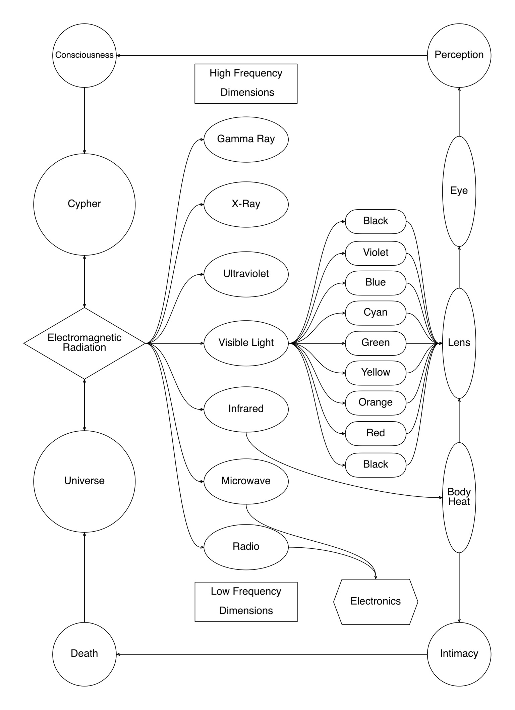

In this initial set are three camera-less videos composed with a video mixer's internal colors, masks, and transitions. These videos emerged as recorded equipment tests, where I improvise switching between channels, playing with the fader to cut1 between signal paths.
When the tape is engaged it is accompanied with the word play, a reminder that these buttons are an instrument that registers the impulses of temporal gestures. These gestures trigger changes on the screen that feedback through the body and regenerated as reaction.
Sound and image interact with each other. I activate the infrared sensor of this Alesis Airsynth2 with the body heat of my foot while simultaneously operating the video mixer with my hands. I imagine it is like operating a train.
The eye registers and recalibrates its aperture and each color slide produces a sense of perceptual intermittence3
Those days I thought about a cosmology of cinema, video4 in terms of seeing, and cameras5 that mediate perception, impulse, optics, movement, UV light, EM radiation and stars.
Those days I thought about a cosmology of cinema, video4 in terms of seeing, and cameras5 that mediate perception, impulse, optics, movement, UV light, EM radiation and stars.

Figure 1 - Diagram of visible and invisible cycles of electromagnetic radiences